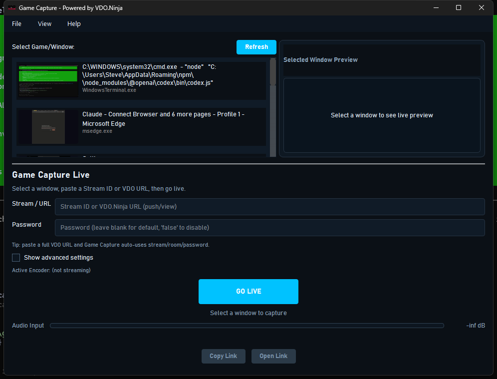

Choose your streaming settings
Gaming, fine text or a smaller upload budget? Find a resolution and bitrate, choose your encoder, and see measured CPU/GPU costs.
Stream games, app windows, and webcams to VDO.Ninja and OBS. Share a viewer link or join a production room, with a stable Windows app and a new Apple Silicon Mac beta.
64-bit · Production release
Apple Silicon only · 0.2.65 Beta 3

Gaming, fine text or a smaller upload budget? Find a resolution and bitrate, choose your encoder, and see measured CPU/GPU costs.
Bring your avatar or graphics straight from apps such as VTube Studio and Warudo, with a transparent background.
Keep backgrounds transparent in browsers and OBS Browser Sources, without the VDO.Ninja OBS plugin.
No. Game Capture publishes directly to VDO.Ninja. A remote producer can receive the stream in OBS, while ordinary viewers can use a browser.
Yes. Follow the transparency guide for the required versions and setup, with screenshots.
Spout2 carries video only. Choose a microphone or output mix separately in Game Capture when you need audio.
Yes. The local API and optional MCP bridge provide source discovery, stream launch, status, logs, and recovery controls. See the AI and automation guide for setup.
Start with the setup guide or README. For a reproducible problem, open a GitHub issue with your source, encoder, receiver, and logs from Help → Open Log Folder.